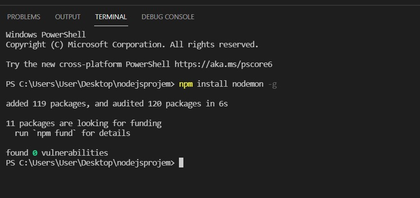
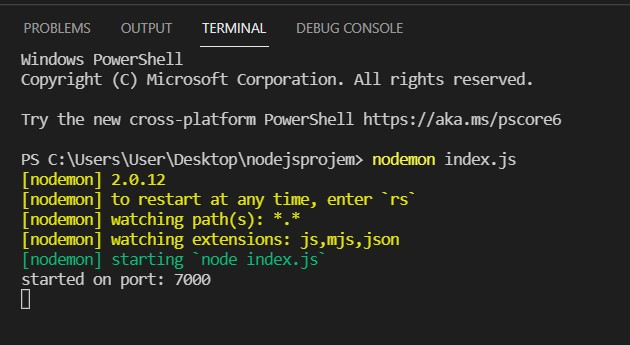
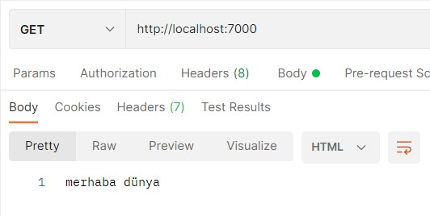
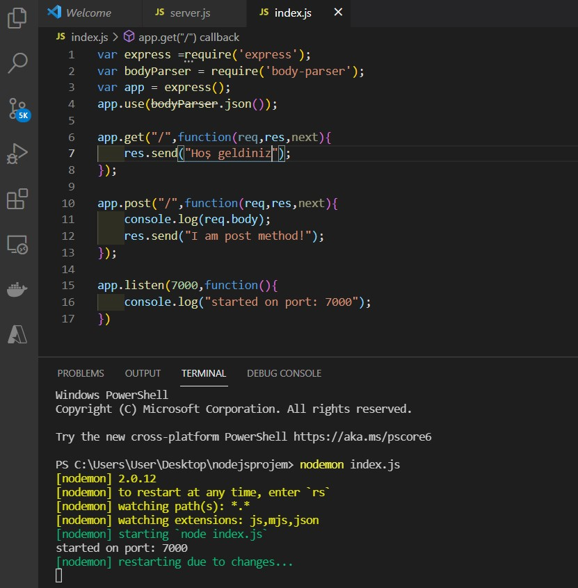
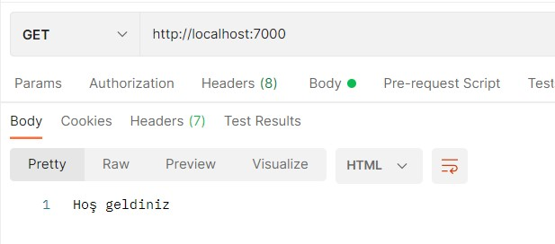
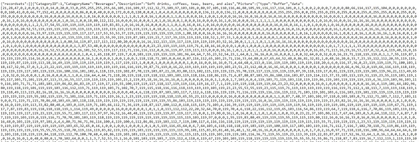

Node.js Kurulum
Node.js öğrenmek istiyorsanız Javasxript ve Html'in temel bilgilerini öğrenmeniz gerekiyor.Nodejs.org sitesinden kendi işletim sisteminize uygun olanı seçiniz. vx.x.x LTS ve vx.x.x Current olarak karşınıza iki farklı versiyon çıkıyor.
Lts: "Long Term Support" un kısaltımıdır, türkçeye anlamı olarak uzun süre destekli sürüm deninebilir. Aynı zamanda, LTS sürümler "ana sürüm"dür. LTS olmayan sürümler ise ara sürümdür ve LTS ye oranla çok fazla güncelleme alır ve içerisinde daha fazla hata bulundururlar.
Current: En son çıkan özellikleri kapsamaktadır.
İndirdiğiniz dosyayı açıp gelen adımarı ileri diyerek devam edin. Node.js'in bilgisayarınıza kurulumunu anlamanız için cmd'ye node --version yazın. Bu komut indirdiğiniz versiyonu göstermesi gerekir.
Visual Studio Code Kurulumu
Node.js geliştirme ortamımızı yapılandırmaya devam ederken sıra, kullanacağımız kod editörünü kurmaya geldi. VS Code; macOS, Linux ve Windows işletim sistemlerinde çalışan ve ücretsiz bir kod editörüdür. Akıcı ve hızlı çalışan arayüzü, dahili komut istemcisi, zengin eklenti desteği ve daha pek çok özelliğiyle VS Code; geliştiriciler tarafından sıklıkla tercih edilmektedir. VS Code'u Windows işletim sistemine kurmak için aşağıdaki işlem adımlarını takip edin:- VS Code Kurulum Dosyası (Harici bir siteye bağlantılar.)'nı bilgisayarınıza indirin.
- Kurulum dosyasını çalıştırın ve yönergeleri takip ederek kurulumu tamamlayın.
- Varsayılan olarak, VS Code C:\users\{kullanıcı adı}\AppData\ Local\Programs\Microsoft VS Code yoluna kurulur.
- VS Code'u başlatmak için Başlat menüsünü kullanabilir yada komut istemcisinden code . komutunu çalıştırabilirsiniz.
NPM Paketleri
NPM Komutlarıİhtiyacınız olan paketi bulduktan sonra npm install
npm uninstall
npm init: Projemizin npm projesi olacağını yani üçüncü parti paketleri kullanacağımızı belirtmeyi sağlar.
const modul = require('modul_adi'); İndirilen modüller Node.js çekirdek modüllerinde olduğu gibi require fonksiyonu ile projeye dahil edilir.
npm install
npm list komutuyla NPM paketleri listeleyebilirsiniz.
www.npmjs.com adresinden ihtiyacınıza göre olan modülü bulabilir ve modül hakkında bilgi alabilirsiniz.
Global Paket Yükleme:
Nodemon paketi: Bizim dosya üzerinde yaptığımız değişiklikleri otomatikman alır ve son haliyle dosyamızı çalıştırır.
www.npmjs.com adresinde nodemon aramasını yapın. Bize nasıl yükleyeceğimize dair komut satırı veya kodlar gösterir.
npm install nodemon -g diyoruz. -g dememizin sebebi global olarak yükleyebilmek.

"index.js" adlı bir dosya oluşturuyorum. İçerisine aşağıdaki kodları giriyorum.
var express =require('express');
var bodyParser = require('body-parser');
var app = express();
app.use(bodyParser.json());
app.get("/",function(req,res,next){
res.send("merhaba dünya"); });
app.listen(7000,function(){
console.log("started on port: 7000");
})
nodemon paketini yüklemediğimiz zaman yaptığımız her değişiklik için server'ı kapatıp tekrar açmak gerekiyordu.
ilk nodemon index.js ile yazdığımız "merhaba dünyayı" localhost:7000 de göstermesi sağlıyoruz.

Postman

Sonra kodumuzdaki "merhaba dünya" yazısını "hoş geldiniz" olarak değiştirip kaydediyoruz. Terminali kapatıp tekrardan açmamıza gerek kalmadan sonucu otomatik görüyoruz.
localhost:7000 de otomatik olarak sonucumuz geliyor.

Postman

Local Paket Yükleme:
lodash paketi: Paketin içerisinde birçok Javascript fonksiyonu vardır.
npm install lodash --save diyoruz. --save diyerek proje bazlı kullabiliyoruz.
node-modules diye bir klasör oluşur ve lodash bu klasörün altında yer alır. Burada lodash'de kullanabileceğimiz modüller yer alır.
Kod kısmına const _ = require('lodash') yazarak kullanmaya başlayabilirsiniz.

Node.js Package.json Dosyası
Bir klasör açalım. Ben nodejsprojem isimli bir klasör oluşturdum. Konsolu çalıştırıp komut satırına npm init yazalım. Konsol ekranı sırasıyla size version, description, entry point... gibi işlemleri soracaktır. Enter diyerek devam edebilirsiniz. En sonda size Is this OK? soracaktır. Bunu onayladıktan sonra klasörünüzde package.json isimli bir dosya oluşur.Package.json dosyası: projenizde kullanılacak olan bir konfigürasyon dosyasıdır. Proje geliştirme süreçlerinizde kullanacağınız npm paketleri bu dosya içerisine bir bağımlılık (dependency) olarak eklenecektir.

Node.js Proje Başlangıcı
Açtığınız klasörün içine .js uzantılı bir dosya oluşturun. Ben server.js ismiyle oluşturdum.Amacım node.js ile Microsoft sql server arasında bağlantı sağlayıp ms server'da olan norhtwınd database verilerine ulaşmaktır. Github hesabımda yer alan server.js dosyasındaki kodları yazabilirsiniz. Bu dosya sayesinde MS server'daki Northwınd database'deki Categories tablosundaki verilere ulaşıyorum. Visual Studio Code terminaline node server.js yazıyorum. Bağlantının sağlanıp sağlanmadığını kontrol edebilmek için internette http://localhost:3000 araması yapılır. Eğer verilerinizi görüyorsanız bağlantınız sağlanmış demektir.
server.js dosyası terminal

http://localhost:3000 sonucu

Referanslar
https://mergen.anadolu.edu.tr/courses/83/pages/visual-studio-code-kurulumuhttps://erhankocabuga.medium.com/node-js-kurulumu-ve-%C3%B6rnek-bir-node-js-projesi-yap%C4%B1m%C4%B1-c0be2bf834f1
https://alpmusti.com/2017/02/node-js-nedir-nasil-kurulur.html
https://www.yusufsezer.com.tr/node-js-npm/